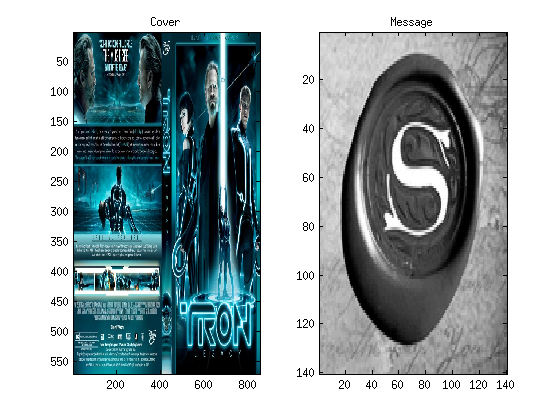
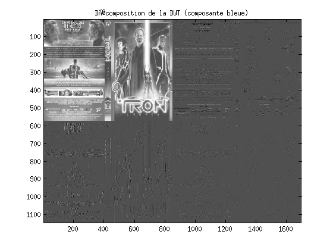
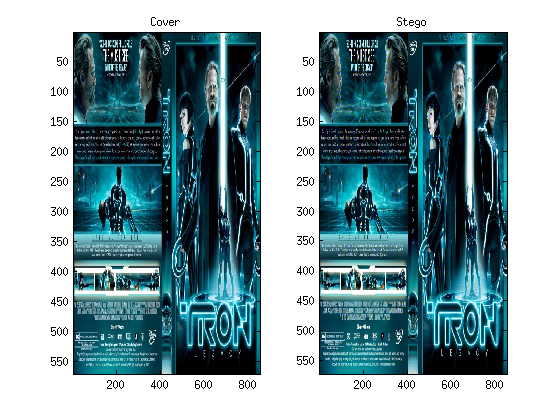
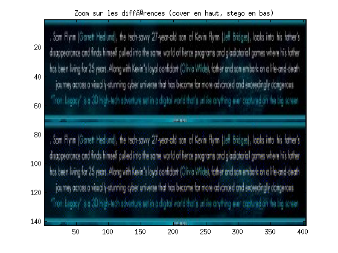
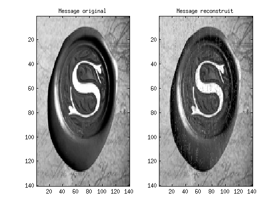

Stéganographie dans le domaine transformée avec la transformée d'ondelettes discrète
Contents
1. Chargement des images (cover et message)
close all, clear all, clc cover = imread('images/dwtcover.jpg'); msg = rgb2gray(imread('images/dwtmsg.jpg')); figure subplot(1,2,1), imagesc(cover), title('Cover') subplot(1,2,2), imagesc(msg), title('Message'), colormap(gray)
2. Implantation du message
On choisit de cacher le message dans la composante bleue car celle-ci domine dans l'image.
2.1. Transformée d'ondelette discrète
close all % Transformée d'ondelette discrète sur la cover (composante bleue) wname = 'haar'; mode = 'symh'; [ca,ch,cv,cd] = dwt2(cover,wname,'mode',mode); % Affichage de la décomposition ica = idwt2(ca,[],[],[],wname,'mode',mode); ich = idwt2([],ch,[],[],wname,'mode',mode); icv = idwt2([],[],cv,[],wname,'mode',mode); icd = idwt2([],[],[],cd,wname,'mode',mode); icall = [ica ich; icv icd]; figure, imagesc(icall(:,:,3)), colormap(gray) title('Décomposition de la DWT (composante bleue)')
2.2. Modification dans le domaine transformée
% On implante chaque composante du message dans la matrices des % coefficients diagonaux, dans la composante bleue car elle domine dans % cette image % Mise à plat de ch, cv et du message [nc,pc,~] = size(cd); [nm,pm,~] = size(msg); cdflat = reshape(cd(:,:,3),nc*pc,1); msgflat = reshape(msg,nm*pm,1); % On transforme le message de uint8 en int8, on sépare les négatifs et les % postififs for i=1:length(msgflat) if (msgflat(i)>=128) msgint8(i) = int8(msgflat(i)-128); else msgint8(i) = int8(msgflat(i))-128; end end % Implantation du message alpha = .5; threshold = alpha*mean(abs(cdflat)); indcdtomodify = find(cdflat>threshold); % à transmettre if (length(indcdtomodify)<length(msgint8)) error('Pas assez de coef a modifier') end cdflat(indcdtomodify(1:length(msgint8))) = msgint8; % Construction de l'image stego cdstego = cd; cdstego(:,:,3) = reshape(cdflat,nc,pc); stego = uint8(idwt2(ca,ch,cv,cdstego,wname)); figure subplot(1,2,1), imagesc(cover), title('Cover') subplot(1,2,2), imagesc(stego), title('Stego') % L'image stego ressemble beaucoup à l'image cover. % Les différences sont essentiellement dans le texte zoomx = 155:225; zoomy = 1:404; figure, imagesc([cover(zoomx,zoomy,:); stego(zoomx,zoomy,:) ]) title('Zoom sur les différences (cover en haut, stego en bas)') 
3. Reconstruction du message
3.1. Transformée d'ondelette discrète
% Transformée d'ondelette discrète sur la stego [ca,ch,cv,cd] = dwt2(stego,wname,'mode',mode);
3.2. Extraction du message
% On extrait les bons coefficients de la matrice des coefficients diagonaux % dans la composante bleue de l'image stego % Mise à plat de cd et du message [nc,pc,~] = size(cd); cdflat = reshape(cd(:,:,3),nc*pc,1); % Les indices où le message est caché a été transmis msgint8 = int8(cdflat(indcdtomodify(1:numel(msg)))); % On transforme le message de int8 en uint8 % Reconstruction du message for i=1:length(msgint8) if (msgint8(i)>=0) msgflat(i) = uint8(msgint8(i))+128; else msgflat(i) = uint8(msgint8(i)+128); end end msgr = reshape(msgflat,size(msg)); figure subplot(1,2,1), imagesc(msg), title('Message original'), colormap(gray) subplot(1,2,2), imagesc(msgr), title('Message reconstruit'), colormap(gray)
Évaluation des performances
covergray = rgb2gray(cover); stegogray = rgb2gray(stego); MSEimg = 0; PSNRimg = 0; for l=1:size(stegogray,1) stegotmp = stegogray; stegotmp(l,:,:) = []; MSEtmp = sqrt(mean(mean((covergray-stegotmp).^2))); if (MSEtmp>MSEimg) MSEimg = MSEtmp; end end RMSEimg = sqrt(MSEimg); S2img = mean(mean(covergray.^2)); PSNRimg = 10*log10(S2img/MSEimg); RMSEimg PSNRimg MSEmsg = sqrt(mean(mean((msg-msgr).^2))); RMSEmsg = sqrt(MSEmsg); RMSEmsg S2msg = mean(mean(msg.^2)); PSNRmsg = 10*log10(S2msg/MSEmsg); PSNRmsg payload = numel(msg)/numel(cover); payload
RMSEimg =
2.4124
PSNRimg =
15.5499
RMSEmsg =
1.8759
PSNRmsg =
18.3665
payload =
0.0135